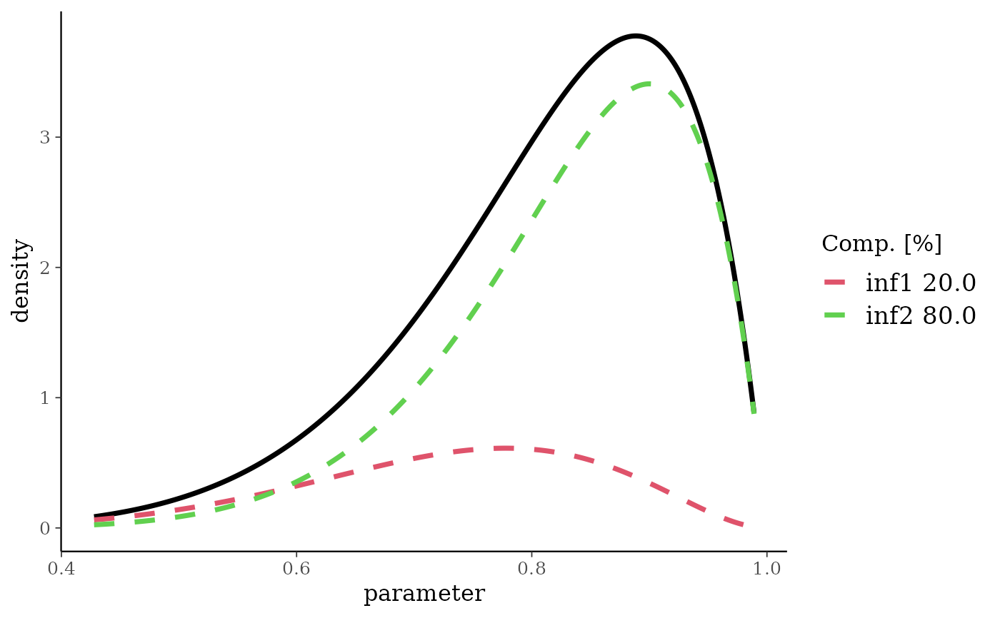
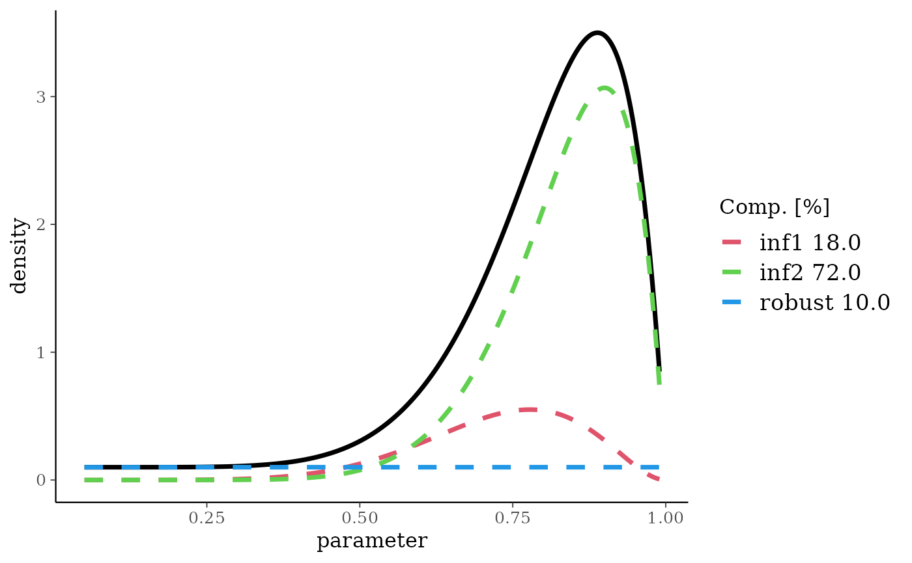
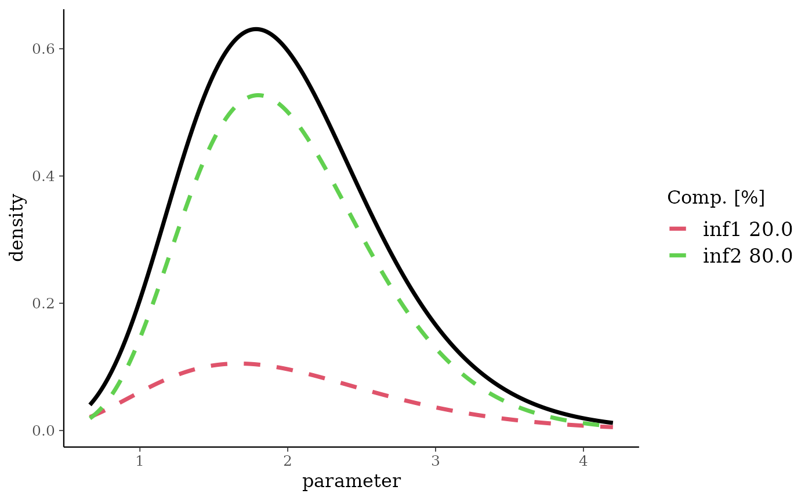
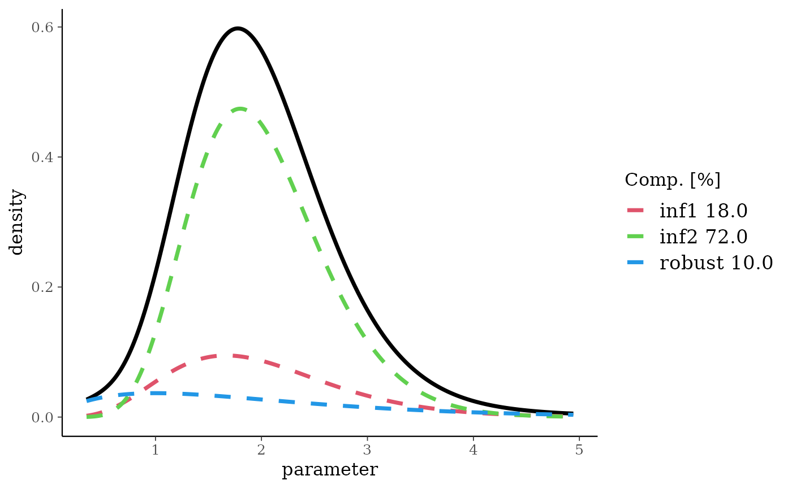
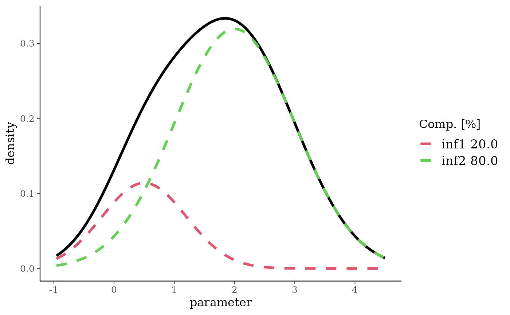
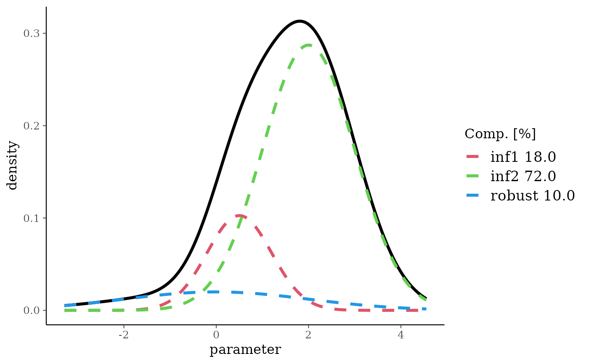

Add a non-informative component to a mixture prior.
Usage
robustify(priormix, weight, mean, n = 1, ...)
# S3 method for betaMix
robustify(priormix, weight, mean, n = 1, ...)
# S3 method for gammaMix
robustify(priormix, weight, mean, n = 1, ...)
# S3 method for normMix
robustify(priormix, weight, mean, n = 1, ..., sigma)Arguments
- priormix
orior (mixture of conjugate distributions).
- weight
weight given to the non-informative component (0 <
weight< 1).- mean
mean of the non-informative component. It is recommended to set this parameter explicitly.
- n
number of observations the non-informative prior corresponds to, defaults to 1.
- ...
optional arguments are ignored.
- sigma
Sampling standard deviation for the case of Normal mixtures.
Details
It is recommended to robustify informative priors derived
with gMAP using unit-information priors . This
protects against prior-data conflict, see for example
Schmidli et al., 2015.
The procedure can be used with beta, gamma and normal mixture
priors. A unit-information prior (see Kass and Wasserman,
1995) corresponds to a prior which represents the observation of
n=1 at the null hypothesis. As the null is problem dependent we
strongly recommend to make use of the mean argument
accordingly. See below for the definition of the default mean.
The weights of the mixture priors are rescaled to (1-weight)
while the non-informative prior is assigned the weight
given.
Methods (by class)
robustify(betaMix): The defaultmeanis set to 1/2 which represents no difference between the occurrence rates for one of the two outcomes. As the uniformBeta(1,1)is more appropriate in practical applications,RBesTusesn+1as the sample size such that the default robust prior is the uniform instead of theBeta(1/2,1/2)which strictly defined would be the unit information prior in this case.robustify(gammaMix): The defaultmeanis set to the mean of the prior mixture. It is strongly recommended to explicitly set the mean to the location of the null hypothesis.robustify(normMix): The defaultmeanis set to the mean of the prior mixture. It is strongly recommended to explicitly set the mean to the location of the null hypothesis, which is very often equal to 0. It is also recommended to explicitly set the sampling standard deviation using thesigmaargument.
References
Schmidli H, Gsteiger S, Roychoudhury S, O'Hagan A, Spiegelhalter D, Neuenschwander B. Robust meta-analytic-predictive priors in clinical trials with historical control information. Biometrics 2014;70(4):1023-1032.
Kass RE, Wasserman L A Reference Bayesian Test for Nested Hypotheses and its Relationship to the Schwarz Criterion J Amer Statist Assoc 1995; 90(431):928-934.
Examples
bmix <- mixbeta(inf1=c(0.2, 8, 3), inf2=c(0.8, 10, 2))
plot(bmix)

rbmix <- robustify(bmix, weight=0.1, mean=0.5)
rbmix
#> Univariate beta mixture
#> Mixture Components:
#> inf1 inf2 robust
#> w 0.18 0.72 0.10
#> a 8.00 10.00 1.00
#> b 3.00 2.00 1.00
plot(rbmix)

gmnMix <- mixgamma(inf1=c(0.2, 2, 3), inf2=c(0.8, 2, 5), param="mn")
plot(gmnMix)

rgmnMix <- robustify(gmnMix, weight=0.1, mean=2)
rgmnMix
#> Univariate Gamma mixture
#> Mixture Components:
#> inf1 inf2 robust
#> w 0.18 0.72 0.10
#> a 6.00 10.00 2.00
#> b 3.00 5.00 1.00
plot(rgmnMix)

nm <- mixnorm(inf1=c(0.2, 0.5, 0.7), inf2=c(0.8, 2, 1), sigma=2)
plot(nm)

rnMix <- robustify(nm, weight=0.1, mean=0, sigma=2)
rnMix
#> Univariate normal mixture
#> Reference scale: 2
#> Mixture Components:
#> inf1 inf2 robust
#> w 0.18 0.72 0.10
#> m 0.50 2.00 0.00
#> s 0.70 1.00 2.00
plot(rnMix)
